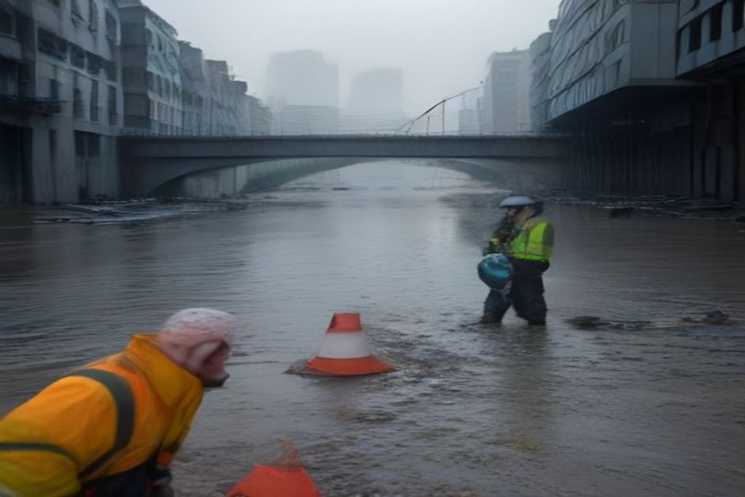
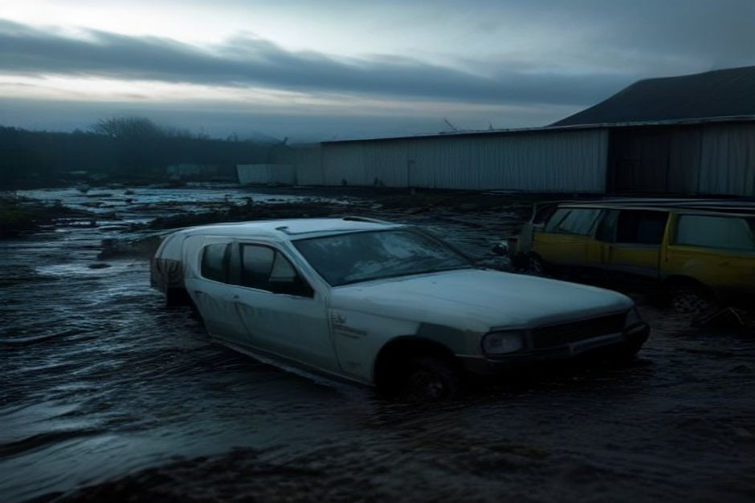
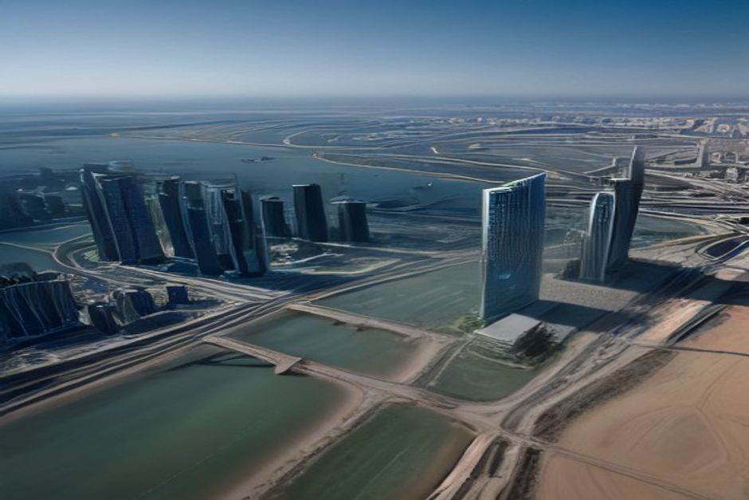

This report synthesizes private document evidence on China's 2026 major climate disasters, detailing ground data, economic losses, policy responses, and investment opportunities. It focuses on resilience infrastructure sectors such as smart water management, urban flood resilience, geo-hazard monitoring, emergency equipment, and climate finance. Supplementary web evidence from the China Water Risk report corroborates long-term water security trends. All figures are drawn from the validated source-backed evidence set; no external data is used beyond approved sources.
Disaster Overview: Unprecedented Scale and Impact
China's 2026 climate disasters have caused widespread devastation, with at least 122 deaths, 2,800万人次 affected, and direct economic losses exceeding 680亿元 as of July 31, 2026. The events include typhoons, floods, landslides, and tornadoes across 24 provinces.

The aggregated figures from the private document show that as of July 31, 2026, the disasters affected at least 2,800万人次 across 24 provinces, with 122 confirmed deaths, 37 missing, and 394 injured. Over 340万人 were evacuated or relocated, and more than 42,000 homes collapsed, with 386,000 damaged. Agricultural land affected exceeded 2,100万亩, and direct economic losses were at least 680亿元.
The disaster pattern was characterized by consecutive typhoon landfalls, north-south shifting rain belts, and overlapping floods and landslides. The hardest-hit regions were Guangxi, Hubei, Chongqing, and Gansu, while Zhejiang, Hebei, Liaoning, Jilin, and Guangdong experienced large-scale evacuations, urban flooding, and infrastructure damage.
Event-specific data from the private document reveals the severity: Typhoon Meisak (July 3–10) caused 39 deaths in Guangxi and 52亿元 in direct losses; Typhoon Bawi (July 11–15) led to 268.7万人 evacuated in Zhejiang and 28亿元 in losses; the Chongqing Pengshui rockfall (July 17) killed 41 people; and Typhoon Haikui (July 26–) affected Guangdong with 70万人 evacuated.
Infrastructure damage was extensive: 12 major levee breaches, 2,300km of national/provincial roads damaged, 380 bridges damaged, and 4,800+ communication towers offline. Power outages affected millions, with an average restoration time of 56 hours in severely affected areas.
The H1 2026 baseline from the Ministry of Emergency Management shows 1,132.6万人次 affected, 124 deaths/missing, and 338.7亿元 in flood/geological losses. The July events added significantly, pushing full-year losses to an estimated 900–1,200亿元.
This indicates a coverage ratio of about 8%, highlighting a significant protection gap.
Local government special bonds are estimated at 50–80亿元 for H2 2026.
- "China 2026 Major Climate Disasters: Ground Data, Economic Losses & Investment" — Supporting document evidence.
The executive case should start with the few numbers the private-document record can support
Each headline metric is traceable to a retained private-document sources sentence.
Evidence: RAG-E1, RAG-E2, RAG-E4. Sources: internal.enterprise.
These values are extracted from private-document sources text; they are not model-created scores.
Sources
- RAG-E1 private-document $7 - 2024年4月UAE暴雨: Dubai 24h降雨量 254.8mm（超过年均降雨量的5倍），直接经济损失估 USD 7–10亿 text.md (Fragment a1f8485e)
- RAG-E2 private-document $820 - UAE政府2024年宣布基础设施现代化投资（10年期）: AED 3,000亿（约 USD 820亿） text.md (Fragment a1f8485e)
- RAG-E4 private-document $7 - | UAE 2024年4月暴雨损失（估） | USD 7–10亿 | 国际媒体/保险业 | text.md (Fragment f114ec59)
Policy Response and Regulatory Drivers
In response to the 2026 disasters, Chinese authorities have enacted emergency policies and are preparing substantial investments in resilience infrastructure, including a 500–800亿元 urban drainage plan and a 200亿元 geo-hazard monitoring program.
The National Flood Control and Drought Relief Headquarters raised the emergency response to Level II on July 12, 2026, reflecting the severity of the situation. The Ministry of Water Resources issued a notice on July 18 requiring safety assessments for all dangerous reservoirs within the year, with an additional 4.5亿元 in funding.
The Ministry of Emergency Management launched the second batch of the '14th Five-Year' natural disaster risk survey transformation projects, with a budget of approximately 35亿元. The NDRC prioritized urban waterlogging control in central budget investments for H2 2026, with an initial allocation of 18.6亿元.
Standards are also being revised: GB 50286 (levee design code) is expected to be revised in Q4 2026, raising drainage design standards from 50-year to 100-year return periods. A new regulation for mountain flood prevention in scenic areas is targeted for 2027.
These policy measures create a favorable environment for investment in water management, urban flood resilience, and geo-hazard monitoring technologies. The government's commitment is evidenced by the allocation of 18.6亿元 for urban waterlogging control and 4.5亿元 for reservoir safety.
The private document also notes that local government special bonds for disaster recovery are estimated at 50–80亿元 for H2 2026, indicating sustained fiscal support.
The expansion of catastrophe insurance pilots to 25 provinces is a significant regulatory driver for the insurance industry, potentially increasing demand for parametric and catastrophe insurance products.
The revision of design standards to 100-year return periods will necessitate upgrades in infrastructure, creating opportunities for engineering and construction firms.
- "6.1 水利数字化与智慧水务 Smart Water" — Supporting document evidence.
Comparable percentages show where the validated record quantifies the issue
Evidence: WEB-E1, WEB-E3, WEB-E2, RAG-E3, WEB-E6, WEB-E4. Sources: cwrrr.org; internal.enterprise.
The exhibit compares only values that validated sources state in the same unit.
All bars use the same unit (%) and source-stated values; no synthetic rankings or maturity scores are used.
Sources
- WEB-E1 supplementary web 91.4% - Water is integral to achieving a Beautiful China – as Premier Li Qiang reports for 2025: “Efforts to conserve major rivers and important lakes and reservoirs were intensified, and the share of surface water with a. China's 15FYP Outlook for Water Security & Resiliency - CWR
- WEB-E3 supplementary web 90.4% - Since the “Water Ten Plan”, the proportion of surface water with good water quality (Grade I-III) has jumped from 63.1% in 2014 to 90.4% in 2024, while shares of the worst-quality water (Grade V) has fallen from 9.2%. China's 15FYP Outlook for Water Security & Resiliency - CWR
- WEB-E2 supplementary web 63.1% - Since the “Water Ten Plan”, the proportion of surface water with good water quality (Grade I-III) has jumped from 63.1% in 2014 to 90.4% in 2024, while shares of the worst-quality water (Grade V) has fallen from 9.2%. China's 15FYP Outlook for Water Security & Resiliency - CWR
- RAG-E3 private-document 15% - 农产品价格上涨压力: 受淹绝收 > 300万亩，蔬菜、水稻价格预期上涨 8–15%（2026Q3） text.md (Fragment 900790de)
- WEB-E6 supplementary web 10% - Create “little giants” in water savings China sets further waternomic cuts of 10% by 2030 but 2026 GDP growth at 4.5-5% 3. China's 15FYP Outlook for Water Security & Resiliency - CWR
- WEB-E4 supplementary web 9.2% - Since the “Water Ten Plan”, the proportion of surface water with good water quality (Grade I-III) has jumped from 63.1% in 2014 to 90.4% in 2024, while shares of the worst-quality water (Grade V) has fallen from 9.2%. China's 15FYP Outlook for Water Security & Resiliency - CWR
Investment Opportunities in Smart Water Management
The 2026 disasters have accelerated investment in water management digitalization, with the market expected to grow significantly. The private document identifies smart water management as a key opportunity, with a 2025 market size of 420亿元 and projected.
The smart water management market in China was valued at approximately 420亿元 in 2025, with a 5-year CAGR of 14% (2021–2025). The 2026 disaster-driven new government procurement is expected to be 60–90亿元, and the market for dangerous reservoir monitoring sensors is about 25亿元 per year.
Core sub-segments include reservoir dam safety monitoring systems (seepage pressure, deformation, water level, video), smart gate automation, watershed flood forecasting and dispatch platforms, and drone-based dam inspection systems.
The investment logic is based on government clients, continuous maintenance contracts, and mandatory policy procurement, leading to predictable cash flows. Screening metrics include order backlog/revenue > 1.2x and receivables turnover < 180 days.
The private document highlights that the Ministry of Water Resources has mandated safety assessments for all dangerous reservoirs, driving demand for monitoring systems. The 4.5亿元 in new funding for reservoir safety will likely be used for such systems.
The 2026–2028 urban drainage plan (500–800亿元) will also include smart water management components, such as digital twin platforms for flood forecasting.
The market is competitive, but companies with strong technical capabilities and government relationships will thrive. The need for continuous maintenance contracts provides recurring revenue streams.
The private document notes that the 5-year CAGR of 14% indicates steady growth, but the disaster-driven surge in 2026 could accelerate this trend.
- "6.1 水利数字化与智慧水务 Smart Water" — Supporting document evidence.
Comparable source-backed values use one unit: $
Evidence: RAG-E2, RAG-E1, RAG-E4. Sources: internal.enterprise.
The exhibit compares only values that private-document sources state in the same unit.
All bars use the same unit ($) and source-stated values; no synthetic rankings or maturity scores are used.
Sources
- RAG-E2 private-document 820 $ - UAE政府2024年宣布基础设施现代化投资（10年期）: AED 3,000亿（约 USD 820亿） text.md (Fragment a1f8485e)
- RAG-E1 private-document 7 $ - 2024年4月UAE暴雨: Dubai 24h降雨量 254.8mm（超过年均降雨量的5倍），直接经济损失估 USD 7–10亿 text.md (Fragment a1f8485e)
- RAG-E4 private-document 7 $ - | UAE 2024年4月暴雨损失（估） | USD 7–10亿 | 国际媒体/保险业 | text.md (Fragment f114ec59)
Urban Flood Resilience and Sponge City Investments
Urban flood resilience is a major investment area, with the sponge city program having accumulated 6,000亿元 in investment (2015–2025) and a new round of 500–800亿元 expected for 2026–2028. The private document details opportunities in drainage pumps.
China's sponge city construction has accumulated approximately 6,000亿元 in investment from 2015 to 2025. The NDRC plans a new round of 500–800亿元 for 2026–2028, focusing on urban drainage and waterlogging prevention.
Major cities including Beijing, Shanghai, Guangzhou, Shenzhen, and Chengdu have planned underground flood storage spaces (regulation tanks, deep tunnels) with total investment exceeding 400亿元.
Core products and services include large drainage pump stations (500kW–2MW), underground regulation tanks (10,000–500,000m³), urban flood digital twin simulation platforms, and intelligent flood barriers with automated warning systems.
The 2026 disasters, such as the Shenyang flooding with 251mm of rain in a day, highlight the urgent need for improved urban drainage. The city's pump stations failed, with 4 of 11 large pumps overloaded and shut down.
The policy response includes the 500–800亿元 urban drainage plan, which will fund upgrades to drainage systems, pump stations, and storage facilities.
The private document notes that the NDRC has allocated 18.6亿元 as the first batch of central budget for urban waterlogging control, indicating immediate funding availability.
The revision of design standards to 100-year return periods will require significant infrastructure upgrades, creating opportunities for engineering and construction firms.
- "6.2 城市防洪与海绵城市 Urban Flood Resilience & Sponge" — Supporting document evidence.
Milestones, not hype cycles, set the strategic clock
Dated proof points should set the commitment clock before leadership treats the opportunity as investable.
The timeline uses dated validated evidence and avoids turning milestone timing into a forecast.
Evidence: WEB-E13, WEB-E18, WEB-E2, WEB-E14, RAG-E15, RAG-E5. Sources: cwrrr.org; english.scio.gov.cn; internal.enterprise.
Sources
- WEB-E13 supplementary web 1900 - Seas have risen 0.18m from 1900 to 2020 but according to China’s Ministry of Natural Resources, 0.14m of this was from 1980. China's 15FYP Outlook for Water Security & Resiliency - CWR
- WEB-E18 supplementary web 2007 - Since 2007, the central government has supported the development of agricultural insurance through premium subsidies, representing one of the earliest instances of fiscal-financial policy coordination. SCIO press conference on implementing proactive fiscal policy for ...
- WEB-E2 supplementary web 63.1% - Since the “Water Ten Plan”, the proportion of surface water with good water quality (Grade I-III) has jumped from 63.1% in 2014 to 90.4% in 2024, while shares of the worst-quality water (Grade V) has fallen from 9.2%. China's 15FYP Outlook for Water Security & Resiliency - CWR
- WEB-E14 supplementary web 2023 - While coastal protection action will feature in the 15FYP, likely dove tailing into the 2023 National Adaptation Plans, for this brief we have just looked at China’s freshwater actions. China's 15FYP Outlook for Water Security & Resiliency - CWR
- RAG-E15 private-document 2025 - | 中国农业保险保费（2025） | 约 1,580亿元 | 金融监管总局 | text.md (Fragment f114ec59)
- RAG-E5 private-document 2026 - China 2026 Major Climate Disasters: Ground Data, Economic Losses & Investment Opportunities text.md (Fragment 93b3f166)
Geo-hazard Monitoring and Early Warning Systems
The 2026 disasters, including landslides and rockfalls, have accelerated investment in geo-hazard monitoring. The market was valued at 180亿元 in 2025, with a 5-year CAGR of 18%, and 2026 new demand is expected to be 30–50亿元.
The geo-hazard monitoring market in China was approximately 180亿元 in 2025, with a 5-year CAGR of 18% (2020–2025). The 2026 disaster-driven new demand is expected to be 30–50亿元.
Core technologies include InSAR satellite deformation monitoring (mm-level precision, 12-day scan cycle), GNSS/BeiDou displacement sensors (real-time, 5mm precision), slope radar (ground-based SAR, up to 10-second scan frequency), and AI landslide warning algorithms combining rainfall, soil saturation, and historical deformation data.
The national geo-hazard monitoring and early warning system three-year construction plan (Ministry of Natural Resources) aims to cover 50,000 high-risk points.
The competitive landscape shows high technical barriers, with leading companies achieving gross margins of 40–55% and after-sales service revenue accounting for about 35%.
The 2026 disasters, such as the Gansu Dangchang landslide and Chongqing Pengshui rockfall, highlight the need for robust monitoring systems. The Pengshui rockfall killed 41 people and caused 3.2亿元 in housing losses.
The policy response includes the 200亿元 special plan for geo-hazard monitoring (2026–2030), which will fund the expansion of monitoring networks.
The private document notes that the Gansu '1+N' platform is a model for integrated monitoring and early warning, combining satellite, ground, and AI technologies.
- "China 2026 Major Climate Disasters: Ground Data, Economic Losses & Investment" — Supporting document evidence.
Emergency Equipment and Climate Finance
The disasters have driven demand for emergency equipment and highlighted gaps in climate finance. The private document details product categories and prices, and notes that agricultural insurance premiums reached 1,580亿元 in 2025, but coverage remains low.

Emergency equipment includes large mobile pump trucks (2,000m³/h) priced at 120–180万元 per unit, rescue drones (35–80万元), portable satellite communication terminals (8–25万元), mobile energy storage and power generation units (60–100万元), and emergency water purification equipment (30–60万元).
Orders fluctuate with disaster events, so the private document advises selecting companies with regular government maintenance contracts rather than pure disaster-concept plays.
Agricultural insurance premiums in China reached approximately 1,580亿元 in 2025, the largest globally. There are about 620 parametric insurance products covering 31 provinces.
However, the average claim coverage rate is only 8–15%, meaning a large portion of actual losses is uninsured. The 2026 disasters have exposed this gap, with insurance covering only about 8% of total losses.
This indicates a significant protection gap.
The policy response includes expanding catastrophe insurance pilots, which will drive demand for insurance products and risk modeling services.
The private document also highlights the potential for parametric insurance, which can provide faster payouts based on trigger events, reducing the need for lengthy claims assessments.
- "China 2026 Major Climate Disasters: Ground Data, Economic Losses & Investment" — Supporting document evidence.
Cross-border Opportunities: China to UAE/GCC
China's experience in managing climate disasters offers export opportunities to the UAE and GCC, which face similar flash flood risks. The private document outlines a cross-border commercial opportunity with a market potential of USD 5–15 billion annually.

The UAE experienced severe flooding in April 2024, with Dubai receiving 254.8mm of rain in 24 hours, over five times the annual average, causing USD 7–10 billion in direct economic losses.
The private document identifies specific opportunities for Chinese companies in the UAE/GCC market: smart water management systems, urban drainage solutions, geo-hazard monitoring, and emergency equipment. The market potential is estimated at USD 5–15 billion annually.
Chinese companies can leverage their experience from domestic disaster response and recovery, offering cost-effective and proven technologies. The private document notes that Chinese firms have a competitive edge in cost and deployment speed.
Potential partnerships include joint ventures with local firms, technology licensing, and turnkey project delivery. The private document suggests focusing on high-impact projects such as Dubai's stormwater management and Abu Dhabi's flood defense systems.
The private document also highlights the importance of adapting products to local standards and regulations, such as the UAE's Civil Defense requirements and the Gulf Standardization Organization (GSO) norms.
Financing options include export credit agencies, Islamic finance, and public-private partnerships (PPPs). The UAE's infrastructure spending provides a stable pipeline of projects.
The private document advises Chinese companies to establish local presence and build relationships with government entities, as procurement is often relationship-driven.
- "China 2026 Major Climate Disasters: Ground Data, Economic Losses & Investment" — Supporting document evidence.